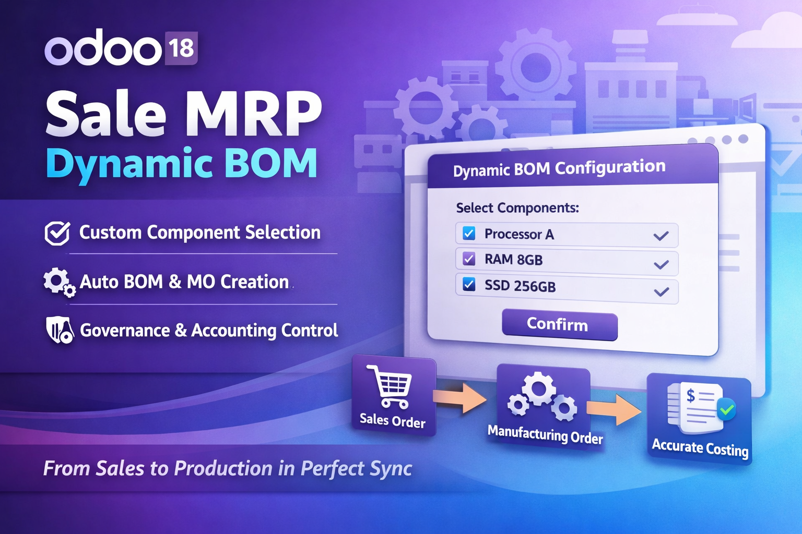

Configure raw-material components per Sale Order line and drive Manufacturing Order creation automatically.
Sale MRP Dynamic BOM seamlessly bridges the gap between Sales and Manufacturing in Odoo 18.
It enables your team to define configurable component options for each product, allowing sales users to select the exact components required directly from the Sale Order line — before or after confirmation.
Based on these selections, the module automatically generates a dynamic Bill of Materials (BOM) and creates the corresponding Manufacturing Order, ensuring production always reflects customer-specific requirements.
Beyond operational flexibility, the module enforces strong governance and accounting control by maintaining full traceability between selected components, manufacturing consumption, and financial impact. This ensures that costing, valuation, and accounting entries remain accurate and aligned with actual production decisions.
The result is a fully synchronized workflow across Sales, Manufacturing, and Accounting — reducing manual intervention, minimizing errors, strengthening control, and improving overall operational efficiency.
Define component groups (e.g. Raw Material, Color, Accessories) with single or multiple selection modes, mandatory flags, and maximum quantity limits.
A dedicated selection wizard on each SO line lets users pick components, enter quantities, and confirms incompatibility or duplicate-product rules before saving.
On SO confirmation (or immediately after configuration on a confirmed SO), a Manufacturing Order with a custom Dynamic BOM is created automatically.
Update Price / Update Components buttons keep the SO unit price, BOM lines, and MO raw moves in sync. Sync warnings appear whenever selections change after MO creation.
When the component price changes after a confirmed invoice, the module auto-creates a draft Credit Note or Adjustment Invoice for the difference, maintaining a full audit trail with component snapshots.
Print a detailed component list from the Sale Order, the component view, or directly from the Invoice — with snapshot behavior for confirmed invoices and labelled addition / removal rows for adjustment documents.
Three lock modes per product: lock after MO Done, lock after MO Confirm, or manual operator lock — preventing accidental component changes after production starts.
Mark component pairs as incompatible. The system blocks selection of conflicting components together, with automatic reciprocal enforcement and a clear error message at the wizard level and BOM creation level.